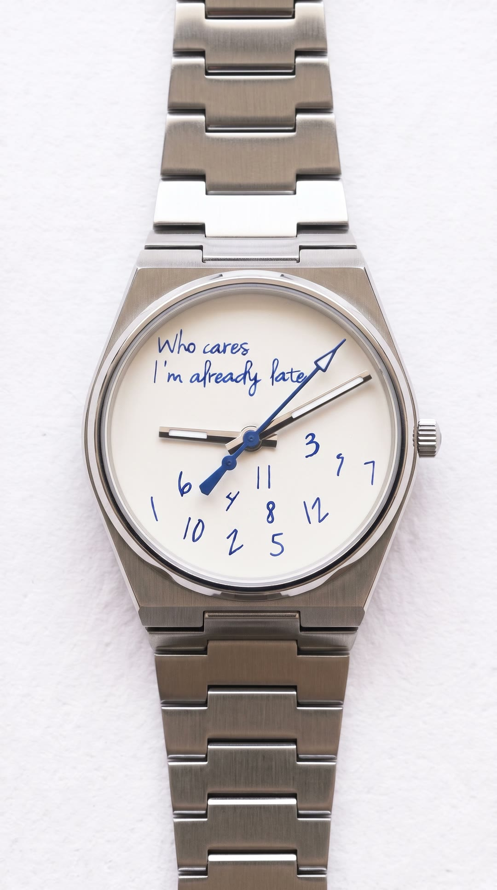
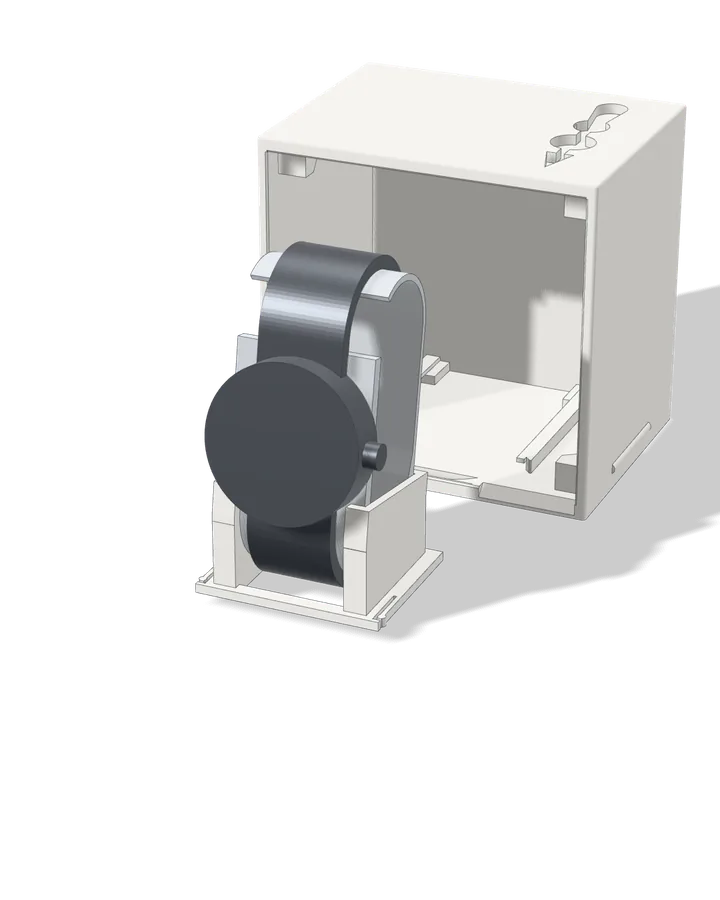

Versión de prueba · imágenes de relleno
Late Edition · 1 of 1
Eventually
Llegará. Cuando llegue.
Desliza
01 El corazón
No lleva pila.
Dentro hay un rotor que gira con cada gesto de tu muñeca y le da cuerda. Mientras lo lleves puesto, sigue latiendo.
02 La esfera
Who cares, I’m already late.
Los números se cansaron de esperar en su sitio y acabaron amontonados al fondo. La hora exacta nunca fue lo importante.
03 Las agujas
Señalan la hora. Más o menos.
Dos agujas de acero pulido, con una línea de luz para cuando se hace de noche. Sin números a los que apuntar, tú decides qué hora es.
04 La azul
La única con prisa.
Una vuelta por minuto, sin descanso. Es la única pieza de color, y la única que nunca llega tarde.
05 La caja
Acero para todo lo demás.
Caja de acero cepillado, cristal de zafiro y brazalete integrado. Hecho para llevarse todos los días, llegues o no.
Late Edition · 1 of 1
Solo existe uno. Es el tuyo.
Montado a mano, pieza a pieza, para Pablo.
Ficha
Lo que lleva dentro.
- Nombre
- Eventually
- Edición
- Late Edition · 1 of 1
- Movimiento
- Seiko NH36, automático · 24 rubíes
- Reserva
- Unas 41 horas sin llevarlo puesto
- Caja
- Acero cepillado, 40 mm, brazalete integrado
- Cristal
- Zafiro
- Esfera
- Blanca, tinta azul, doce números fuera de sitio
- Agujas
- Acero pulido con luz, segundero azul
- Montado
- A mano, por Pepe · diciembre de 2026
Instrucciones
Por si acaso.
-
Si se ha parado
Gira la corona hacia delante unas treinta vueltas, sin sacarla. Luego póntelo: tu muñeca hace el resto.
-
Para ponerlo en hora
Saca la corona del todo, hasta el segundo clic, y gírala. La aguja azul se detiene mientras tanto: es el único momento en que espera a alguien.
-
Si lo dejas quieto
Aguanta unas 41 horas, algo menos de dos días. Si se para no pasa nada: se le da cuerda y sigue.
-
Agua
Lluvia y lavarse las manos, sí. Ducha, piscina y mar, no: está montado a mano y no ha pasado prueba de presión.
-
Si pierdes la aguja
La caja se abre igual. Debajo, en la base, hay una ranura fina: mete un clip estirado y arrastra con él el pestillo a lo largo de la ranura.
-
Imanes
La aguja lleva dos. Guárdala en su sitio, encima de la caja, y no la dejes pegada al reloj: los imanes pueden hacer que adelante.

La caja
Se abre con una aguja.
No tiene bisagras, ni botones, ni prisa. Son cinco gestos.
01 La funda
Primero, la funda.
Tira de ella hacia arriba. Dos nervios la sujetan: basta un tirón suave.
02 La aguja
La azul es la llave.
Está encima de la caja, a ras. Ponla en el centro del frente, con la punta hacia arriba: un imán la coloca.
03 El giro
Adelanta la hora.
Gírala a la derecha, hasta el tope. Por dentro, un rotor la sigue a través del panel y recoge los dos pestillos.
04 El panel
Tira de la aguja.
El panel sale con ella. Déjalo a un lado.
05 El reloj
Y ahí está. Por fin.
Tira de él: sale con su peana. Fuera de la caja se queda de pie, a la vista.
Para cerrar
Lo mismo, al revés.
La peana dentro hasta el clic. El panel dentro con la aguja girada. Gira la aguja de vuelta y guárdala en su sitio.
Son las 9:12. Más o menos.
Por si el tuyo se ha parado.
Pablo:
No creo que con este reloj
dejes de llegar tarde,
pero al menos
cuando veas la hora
te acordarás de mí.
Pepe